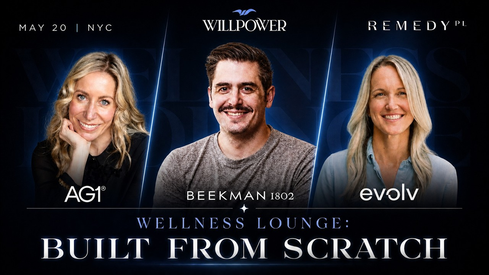

The first system she built was distribution
Becca McCarthy has done zero to one twelve times. She has taken $5,000 checks and she has IPO'd companies. She has had the wire hit and she has laid off 200 people in 24 hours.
Eight months into Evolve, the world's first oral GLP-1 receptor agonist, she is on track for nearly $100M in year one, growing 40% month over month.
And the first thing she built was distribution.
"Know your distribution before anything else. Know the plan. Is it retail? DTC? How are you getting in front of that customer?"
She had the distribution strategy locked before the product finished being made. She has also done it the other way, built the thing and waited for people to be as obsessed as she was.
"You have to fish where the fish are."

AG1's segmentation was one segment. Leala rebuilt it
Leala Francis joined AG1 as SVP of Consumer Product and CX and asked one question on day one. Let me see your segmentation.
It was one segment. Named "health and wellness." Built on attitudes.
"An attitude towards health and wellness doesn't actually change that much. And you can't really measure it."
A real segmentation runs on needs, beliefs, behaviors and attitudes together. So she built one from scratch.
The bar she set: everyone at AG1 could buy their customer a birthday present and get it right first time. The drivers, the habits, the fears, the wrecking-ball moment that made somebody decide to take their health seriously.
"No one bought AG1 saying 'I want to sign up to AG1.' The root cause is: I want to feel empowered to take ownership of my own health."
Everything downstream runs off that. Growth gets it as a story ("what's on Rebecca's mind right now?"). CX uses it to sort education from support. Innovation uses it to pick what to build.
"Everyone in my business could buy our customer a birthday present and get it right first time. That's how well we know our customer."
Leala Francis, AG1David built TikTok Shop himself, on a weekend
David Baker joined Beekman 1802 as Chief Digital Officer after a private equity acquisition. First six to nine months, no sleep, everything at once. Rebuilding the site, the tech stack, the SMS infrastructure, the CX team.
Then Amazon. He pulled it in-house and took it from a reseller operation doing roughly $100K a year to Beekman's number two channel. Two and a half years.
Then TikTok Shop showed up in 2023.
He did not forward the email to his team. He spent a weekend building the pages himself, going through passport verification, learning it from the inside.
Now when his team gets stuck on TikTok Shop, they come to him. "That's training money can't buy."
Player and coach at the same time. If you have never been in the weeds on something you cannot manage it, hire for it, or buy it intelligently.
"You can only buy what you know how to make."
Retention is one sentence
Becca's retention strategy is the most annoying thing she said all night, because it is the only true thing.
"Make the product do what it says it's going to do. Period. And then retention is small problems."
No CX team saves a bad product. No loyalty program rescues something that does not work.
Leala gets to the same place the long way. The gap between delivery and first sip is the moment of truth, and you should never have to ask where your order is.
Day one hands off to her team. Day four after a new product purchase, a real person reaches out and asks what you thought. Cat Cole, AG1's CEO, reads every customer email.
The product is the service and the service is the product.
"Never pass a good product with bad service. Your product IS your service and your product. It must be, at all times, top of our game."
Leala Francis, AG15,000 advent calendars, 100 complaints, 800 silent
Beekman sent an advent calendar to their most loyal customers, early access at a special price. Sales slowed, so they added a free ornament to push the campaign.
Nobody thought about the people who had already bought.
About 100 customers reached out. David's estimate is another 800 who would say nothing to Beekman and plenty to everyone else.
So they sent the ornament to all 5,000.
Then they sent a bouquet of their floral scent as a forgiveness gift, which put product in the hands of people who had never tried it while running down excess inventory at the same time. Clever.
"Do better than best" is a principle they actually run on. Something goes wrong, you do more than fix it.
The word they use is neighbors. "We believe we built this brand neighbor by neighbor by neighbor."
The pasta test for build versus buy
Ninety days and limited resources. Build, buy or kill?
David's framework is pasta. Make it from scratch at home (five hours, wrecked arms). Buy it from the Nonna at the farmer's market. Grab the Whole Foods fresh stuff. Or Kroger.
All four sit on a spectrum, and the right answer depends on what you are good at, what you can maintain, and the long term cost of ownership.
"I now know what to look for when I'm looking for really good pasta because I've made it from scratch."
That is the only reason he can evaluate vendors and AI tools without getting conned. There are bad actors everywhere and the only armor is knowing the thing.
"If you haven't taken the time to roll up your sleeves and get started, you're easy to con."
Becca's 90 day answer is simpler. Build for profitability, because cash is freedom. Negotiate every supply chain term to 100% on delivery, net 45.
"No investor is ever going to tell you that's a good idea because they want you to be dependent on them. But profitability is freedom."
You cannot use advice from before the AI era
Sharpest line of the night, and it stung the room a little.
"No one who's been a founder before knows anything about being a founder today."
The playbooks do not transfer. Advice from people who built in 2015, 2018, 2021 does not apply to what you are building right now.
What you need is a tight group of founders building in these exact conditions who you can text and call. People living the same weather.
"That's it. Don't listen to anybody else. Not even us."
David's version: companies starting clean right now, pouring every spec of context into an AI-agentic platform, get a revolutionary advantage over companies that started seven months ago, never mind seven years. Everyone else spends years paying down process debt.
What is your craft?
Leala asks one question in every interview. What is your craft?
The thing you are in the work, underneath the title.
Hers: "My craft is that I see and connect dots before anyone else. I can see patterns in behavior."
She hires curiosity. People who ask one more question after the conversation is supposed to be over, who want to know why a thing works the way it does.
"Someone who is not afraid to sort of break things apart, that takes a lot of confidence."
Becca hires for what you cannot teach. Work ethic, attitude, resilience. Does the trench energize this person or paralyze them?
Thirty minute interviews cannot really answer that. The question underneath every hire is what this person does when it gets hard.
What to take home
- Becca locked distribution before the product was finished. Know exactly how and where your customer will transact with you (two clicks, three clicks, which channel) before you have anything to sell.
- Leala inherited a one-segment model at AG1 and rebuilt it until anyone on the team could buy the customer a birthday present and get it right. Without that, you do not have a CX plan.
- David built TikTok Shop himself on a weekend so his team never had to learn it without him. The executive who forwards the email loses.
- Beekman sent the ornament to all 5,000, not only the 100 who complained. The 800 who stay quiet and leave are the ones who cost you.
- Becca on advice: nobody who built before the AI era knows how to build in it. Find founders building right now, in these conditions. That room is the whole point. Growth Through Community.